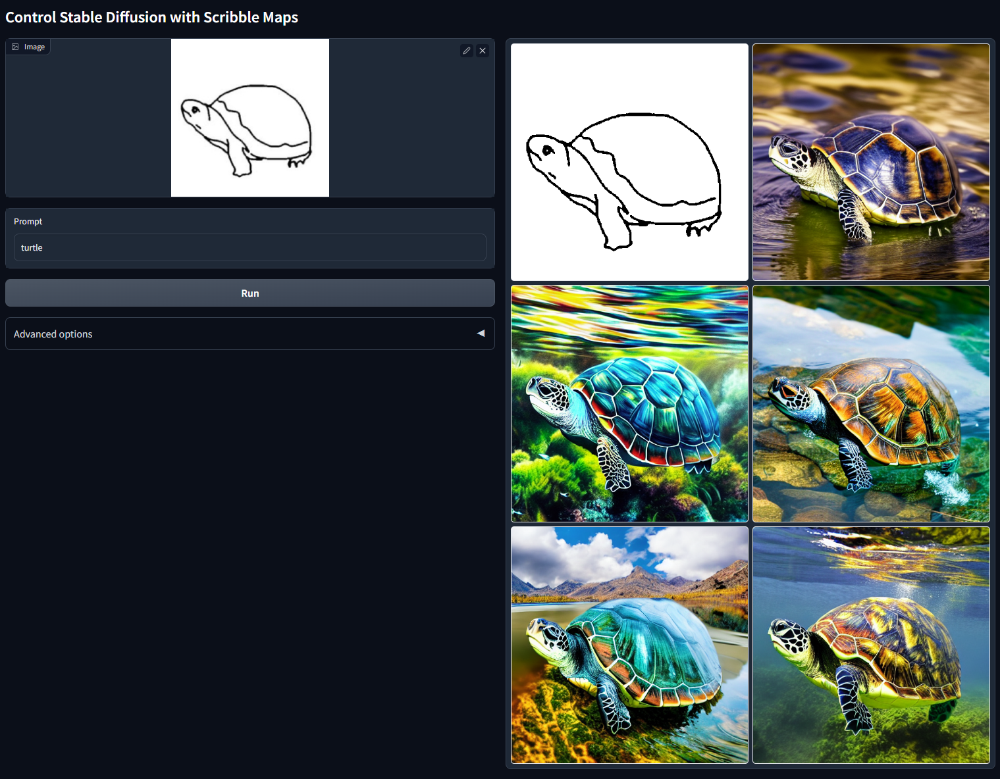
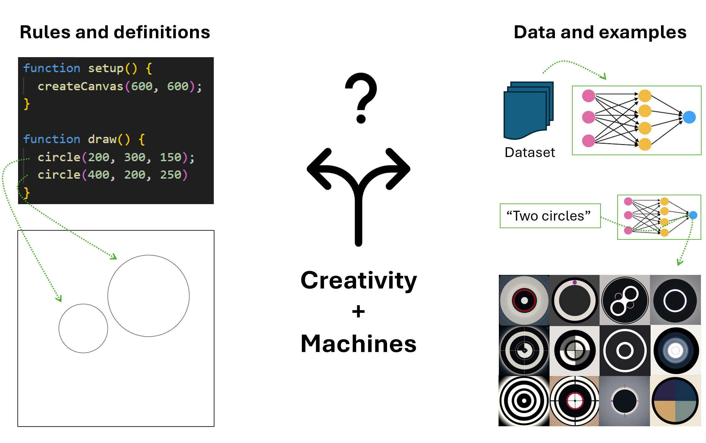

It is generally agreed that human technology acts on nature for a purpose: an axe can chop a tree to make firewood. Prima facie, the essence of technology may be superficially conceptualized as instrumental. While it is true that the first stone tools were used to help with the physical tasks of hunting and gathering, it is also true that the same tools were used to engrave caves with non-utilitarian abstract patterns (Rodrı́guez-Vidal et al. 2014). The first writing was used at first to keep records of crops (Hallo 1971), but it quickly became a defining tool of our society, its social laws, religious beliefs and cultural identity. These artifacts tell us who we are, how we see the world and what our place in it is (Ihde 1990; Rosenberger and Verbeek 2015). Technology and creativity work hand-in-hand to create the fabric of human society. If our existence and perception of the world is indeed so heavily influenced by the technological environment around us, it would be limiting to see technology just as means to an end (Heidegger 1977; Winner 1980; Feenberg 1991; Ihde 1990).
Throughout history, we have examples of how technology has disrupted how we produce, consume and evaluate creative artifacts. The invention of the printing press in the 15th century changed the way books were produced and distributed. Likewise, the invention of the camera in the 19th century transformed the way we capture and share images. The invention of the computer in the 20th century revolutionized the way we store and process any type of information. Arguably, generative tools based on Machine Learning (ML) are on the verge of redefining the creative industry. Today,
producing large amounts of quality text, images and music is much less labor intensive than it ever was
For example, in a not-so-distant future it may be possible to generate narratives about any given topic by training a ML algorithm on a large corpus of text. This is already possible to some extent: the current state of the art is such that it is possible to generate relatively complex stories starting from a simple prompt. Here is an example from GPT3.5 (Brown et al. 2020):
Prompt: Write a short story with a moral, with protagonist Jack, Mary and their pet dragon George who is very fond of pizza.
Once upon a time, there was a boy named Jack and a girl named Mary who owned a pet dragon named George. George was an unusual dragon because he was very fond of pizza. In fact, he would do anything for a slice of pizza. Jack and Mary loved George very much, so they would always order pizza for him whenever they could.
One day, Jack and Mary noticed that George was getting bigger and bigger. They realized that he was eating too much pizza and not exercising enough. They knew they had to do something about it. So, they decided to take George for a walk every day and limit his pizza intake.
At first, George was unhappy about the change. He missed his favorite food and didn’t want to exercise. But Jack and Mary were patient and persistent. They knew that it was for his own good. Slowly but surely, George started to enjoy his walks and even started trying new foods that were healthier for him.
One day, while on a walk, they came across a group of people who were littering the park. Jack and Mary were upset and wanted to do something about it. George, who had now become fit and strong, decided to take action. He picked up the litter and put it in the trash bin. Everyone was amazed by what he did and started applauding him.
From that day on, George realized that he didn’t need only pizza to be happy. He found joy in helping others and doing good deeds. Jack and Mary were proud of their pet dragon and were grateful for what they had learned. They learned that sometimes, the things we think we need the most may not be what’s best for us. It’s important to find balance in life and to take care of ourselves and our surroundings.
The moral of the story is that we should not let our desires control us. We need to learn to make healthy choices and take care of ourselves. We also need to take care of the world around us and help others when we can. With determination and persistence, we can achieve anything we set our minds to.
In a similar way, generating images from text descriptions has become a trivial matter of seconds. We are now able to generate photo-realistic images, digital illustrations, sketches and much more from a few keywords. The impact that this technology might have in the workflow of graphic illustrators, designers, architects in the next ten years is quite substantial. For example, Large Diffusion Models (LDM) such as Stable Diffusion (Rombach et al. 2021) make it possible to transform basic sketches into full fledged images (see Figure 1.1).

The sound domain is also filled with new tools and applications that make use of large public datasets. Generative tools can be found in the field of speech recognition and synthesis, for example OpenAI’s whisper (Radford et al. 2022) and Google’s audioLM (Borsos et al. 2022). For music composition and generation, it is now also possible to generate rich and complex audio clips based on a text description or even an image (Agostinelli et al. 2023; Q. Huang et al. 2022).
All of this could mean that, in the not-so-distant future, the creative industry will be transformed in a radical way. Technology will allow us to generate large amounts of personalized content with little effort. In the long term, it is likely that this will have a profound impact on the way we consume content, and it also could have substantial impact on the way we value creativity. Within this context, it becomes increasingly evident that these computational tools will become intertwined with our way of thinking creatively.
Concept formation is a central part of creative tasks such as problem solving, design, and scientific discovery. The overarching goal of this thesis is to investigate how computational methods affect different components of the creative process, such as making associations or combinations of concepts, performing abstractions, evaluating and selecting concepts (Hoorn 2014, 2023). The automation of analytical reasoning and the advent of computers has made it possible to build machines that can help us come up with new ideas or refine existing ones. But the nature of human concepts and their origin is still not well understood, so these automated implementations only reflect our hypothesis about how concepts might work.
It follows that, in order to discuss concept formation for machines, it is necessary to have a mental model of how human concepts work, fail to work, combine with each other and are applied to objects, events, people or experiences. In cognitive psychology this phenomenon is known as categorization. The simplest and most traditional way of thinking about conceptual categorization (i.e. the process of assigning object instances to the appropriate category) is to use definitions. Scholars refer to this definitional framework as Classical Theory (CT). According to this view, conceptual categorization involves checking whether the necessary defined properties are present or not in the object instance in question. Albeit simple, this method can accurately model some aspects of how concepts work (Laurence and Margolis 1999). CT also makes it possible to formalize and mechanize some parts of the creative process. Philosophers and researchers have highlighted the many limitations about this approach to concepts. Prototype Theory is an alternative theory attempting to deal with the problems of definition-based approaches (Rosch and Mervis 1975; Rosch 1978; Murphy and Medin 1985; E. E. Smith and Medin 1981; Medin 1989). In PT, each concept is represented by a prototype, which is an idealized example of the concept. PT focuses on the properties that are typical for the category in question, as opposed to the properties that are necessary. This means that in PT, an instance need not have all the typical properties to be assigned to a category, it simply needs to be more similar to that category’s prototype than any other (Wittgenstein 1953). Compared to CT, PT is more attuned to the way human categorization works, but also has its shortcomings (Laurence and Margolis 1999; Osherson and Smith 1981). For example, it is not obvious what the prototype is if a category has many or lacks typical instances, such as New species or Objects that weigh more than one gram (Laurence and Margolis 1999).
PT is well suited for explaining and mechanizing conceptual categorization because it allows for flexible representations of concepts that can accommodate the inherent fuzziness of some categories1. However, the notion of similarity upon which they rely on to assign instances to their categories is not so easy to formalize. Some implementations of these theories adopt geometrical models to measure similarity, such as euclidean or cosine distances, while others rely on presence and absence of features, such as Tversky’s contrast model (Tversky 1977) which is the most commonly used in psychology.
Another way of formalizing categorization is to use probabilistic models. This approach has been gaining popularity in recent years, as it has been shown to be more successful in dealing with the problems of definition-based approaches (Hüllermeier and Waegeman 2021; Xu et al. 2021; Linardatos, Papastefanopoulos, and Kotsiantis 2020). Probabilistic models of categorization are essentially statistical models that estimate the probability that a given object instance belongs to a given category. The probability is calculated based on the observed properties and their relations. Statistical models typically require a lot of training data in order to achieve human-level accuracy and of course they will still make wrong predictions. Nevertheless, the non-deterministic nature of the probabilistic approach allows models to exhibit inherent creativity through misclassification and errors (Hoorn 2023).
This thesis is concerned with how these different accounts of conceptual categorization affect the creative process. It investigates how different aspects of creativity are affected by a technology’s embedded assumptions about what concepts and categories are.
When we use of machines and other computational tools for creative purposes, the choice of technology has impact on the kinds of tasks required for the creative process. Imagine for a moment that you are an artist or designer working on a digital artwork around the theme two circles. You have the option of using a programming language or a traditional program to produce your design, or you might decide to use as text-to-image generator like StableDiffusion or Midjourney. How does this choice affect your creative process? On one hand, for the code or program to work, you might have to define every aspect of your design, the size of the canvas, the positioning of the circles, etc... On the other, you could simply type as a prompt and the model will generate many images of circles, which may or may not contain exactly two circles (see Figure 1.2). The result and the process are both quite different.
Indeed, these two approaches have opposing theoretical origins, which will be discussed in the literature review. On one hand the rule-based approach is firmly grounded in the idea of intelligence as analytical thinking and computation (Turing 1950). This approach is tightly connected with CT and has been the dominant paradigm for over five decades. On the other hand, the data-driven approach that has been gaining popularity in the last two decades is instead grounded in PT, as it subscribes to a probabilistic representation of concepts.
This thesis is set out to investigate the differences between these two approaches and the impact that this choice has on the creative process. The objective is to provide a framework that can describe these two approaches and their assumptions about what concepts are.

In the last 15 years, the corpus of papers in the field of Artificial Intelligence (AI) and ML has been growing at an exponential rate (Krenn et al. 2022). A handful of new companies, such as OpenAI and Stability.ai, alongside few industry giants, such as Google, Meta, Microsoft and Nvidia, are competing fiercely to offer products and services that leverage ML. As these technologies become largely available and more accessible, not much attention is directed towards gaining a better understanding of the long-term implications that these data-driven tools have on the way creativity is valued by authors and audiences.
Moreover, state-of-the-art computational methods for media generation also expose how the technological front has evolved much faster and far beyond our theoretical, ethical and legal frameworks. Acclaimed projects, such as GPT3 (Brown et al. 2020), StyleGAN 2 (Karras et al. 2019), Magenta (Roberts et al. 2018; C.-Z. A. Huang et al. 2018), build upon large datasets of text, images and music, often obtained without the consent of the people involved. So is the case of Stable Diffusion (Rombach et al. 2021), an open-source model trained on the 5 billion images in LAION-5B dataset (Schuhmann et al. 2022). Several artists have found that . This discovery led them to file lawsuits against the Stability.ai, the company that trained the model. This is a unprecedented situation, which poses theoretical and ethical questions as well as copyright headaches.
Deep Learning (DL) relies on probabilistic representations of concepts obtained from large datasets. This means that the generated output is optimized to match the bias in the training data. For this reason, DL and, more specifically, large pre-trained models that learn from data gathered on the internet, stand in a direct relationship with the cultural and social norms that influenced the training datasets.
The relationship between society and technology has been discussed at length by philosophers such as (Heidegger 1977), (Ihde 1990), (Latour 1990), (Flusser 2000) and (Verbeek 2011). The impact that different forms of technology have on the creative process has also been addressed by the academic efforts of the Computational Creativity (CC) community. Scholars in this field, have thoroughly discussed whether non-human agents can be considered creative (Wiggins 2006b, 2006a), thus focusing primarily on how the evaluation of artifacts produced by autonomous systems should be conducted and which criteria should be used (Jordanous 2009; Boden 2010; Lamb 2018; Agrawal 2019; Colton 2008, 2012). In parallel, the Human Computer Interaction (HCI) literature stream addresses interactions with computers as a design problem. A few authors attempt to discuss how human perception is affected by the interaction with new technologies (Algarni 2020; Ragot 2020; Hoorn 2023).
This thesis also discusses the impact of this data-driven trend on society at large. It attempts to identify critical factors of data-driven technologies and the effect they have on the creative process.
Chapter 2 is dedicated to the literature review and discusses two main topics. The first part (Section 2.1) addresses various TOCs introducing main authors, supporting evidence and issues related to each theory (Laurence and Margolis 1999). The second part (Section 2.2) presents a review of philosophy of technology introducing phenomenology and post-phenomenology (Ihde 1993; Latour 1993, 1990; Verbeek 2011; Heidegger 1977) and discusses the evolution of different computational approaches within the context of creative practices. The second part ends with a systematic literature review of computational creativity papers, highlighting the trend of data-driven tools and how it is affecting the research community.
Chapter 3 in this thesis reviews existing theoretical frameworks addressing creativity (Rhodes 1961; Boden 2003; Hoorn 2014) and presents an extension of mediation theory developed by (Ihde 1990, 1993). The chapter introduces the distinction between two approaches to computation and their implied TOCs, as discussed in Chapter 2. This theoretical foundation is then used in the studies and in the final discussion chapter. Chapter 3 also discusses matters related to Practitioner Research (PR) which was adopted for the first two studies in this doctoral thesis.
Three distinct studies in the creative fields of music, images, and text-to-image are covered in Chapters 4, 5, and 6, respectively. Chapter 4 presents a collaboration with a music composer in which we attempted to train a model to generate music in her style using ML (Dinculescu, Engel, and Roberts 2019; C.-Z. A. Huang et al. 2018). The study in Chapter 5 examines the process of dataset curation as reflective practice (Schön 1983) and was carried out in partnership with a fellow PhD student who is also a photographer. Chapter 6 presents a study involving 76 participants which investigates how users of a Stable Diffusion (SD) Discord bot use text-to-image technology in relation to their Tolerance for Ambiguity (TA) personality trait (Herman et al. 2010; Norton 1975; Furnham and Marks 2013; Zenasni, Besançon, and Lubart 2008) and user expectations.
Chapter 7 combines the insights collected from each study and discusses three main points which emerge from the results. First, it addresses the central role of dataset curation within the ACASIA framework (Hoorn 2023), highlighting how custom models trained by the community might represent an novel form of creative product. It then addresses the central role of text-based model conditioning in relation to Ihde’s hermenentic intentionality (Ihde 1993), speculating on the role of language as interface for concepts. Finally it discusses how data-driven tools are blurring the boundaries of authorship and ownership between human and non-human and the implications of this ambiguity.
The last chapter in this thesis summarizes once again the purpose of the research, the gaps that have been addressed and the main findings. It then discusses limitations of the studies and suggests several directions for further research.
No man ever steps in the same river twice, for it’s not the same river and he’s not the same man.
(Medin 1989) for example asks: are carpets part of the furniture?↩︎